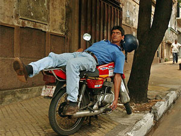
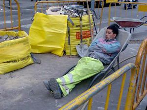

Siesta
 De: La Frikipedia, la enciclopedia extremadamente seria.
De: La Frikipedia, la enciclopedia extremadamente seria.
La siesta es una costumbre española consistente en dormir unos minutos después de comer para así continuar haciendo el vago toda la tarde con mas energía.
Se ha dicho que en España se paraliza la vida de 2:00 p.m. a 4:00 p.m. y esto es falso, se paraliza de 2:30 p.m. a 4:30 p.m. y solo de Burgos para abajo.
Se ha demostrado que si un ejemplar español adulto de peso medio se encuentra en las inmediaciones de una cama (o lecho), en los minutos posteriores a una copiosa comida de cordero asado (o lechazo), es absolutamente imposible evitar que se abalance sobre la cama (o lecho) y se duerma una horita (oleee...).
Nunca se debe comparar el sueño experimentado a la hora de la siesta con el que se tiene por la noche. Por la noche simplemente tienes sueño y estás cansado. Después tomarte en la comida siete cervezas, una de boquerones, dos de chopitos, una paella mixta, dos litros de sangría, un flan de huevo, cuatro pacharanes y un café con sacarina, no es que tengas sueño es que eres como una marmota anestesiada.
Paradojas de la siesta: Cuando eres pequeño, tienes vacaciones de verano de tres meses y no tienes nada que hacer, intentan obligarte a dormir la siesta y tu te vas en pleno agosto a las tres de la tarde recién comido con la bicicleta de excursión al peñasco del lagarto. Cuando eres mayor, matarías a tu madre por una cama, pero tienes que trabajar como un gilipollas.
No se conoce antídoto, ¿cuanta gente hay que si se toma un café a las cinco de la tarde ya no duerme en toda esa noche, pero si se toma el mismo café después de comer cae inmediatamente en estado de aletargamiento semicomatoso terminal?
Clases de siesta
 No hace falta comentar nada
- Siesta convencional o Siesta propiamente dicha, en sofá, con manta de cuadros, sujeto en posición decúbito prono supino, duración entre 20 y 40 minutos, ligero dolor de cervicales y un nivel de amuermamiento aproximado de 30am.
- Siesta de camello. Siesta en la que al ser despertado, (de una siesta de camello jamás se despierta uno espontáneamente) el sujeto presenta la misma cara, coordinación y babilla en la comisura de los labios que el conocido camélido del atlas africano.
- Siesta de padre nuestro, pijama y orinal. Viene a ser como la siesta de camello, pero mas antigua. En algunas culturas lacustres se considera imprescindible una preparación previa consistente en cepillarse la melena 100 veces antes de acostarse.
- Siesta de documental. Rápida y eficaz, actualmente es la mas practicada, consiste en pegar diez o doce cabezazos en el sofá mientras en la televisión emiten contenido específicamente rodado para causar dicho efecto. Las variantes más conocidas son la siesta del ñu en el Serengeti, la siesta del tiburón blanco que ataca una jaula y la siesta del pulpo.
- Siesta en el trabajo. Eficaz reivindicación de la jornada continua consistente en destrozar monitores de ordenador a cabezazos a las 3 de la tarde.
- Siesta aletargada. Tipo común de siesta que te atrapa mientras ves la televisión después de comer y cuyos efectos van más allá del periodo de sueño en sí. Este tipo de siesta se basa en el principio de no querer dormir para aprovechar la tarde. Mientras el sujeto descansa después de la comida viendo la tele, esta va atrapando, una a una, todas las neuronas de su cerebro hasta que acaba sobando sin remedio alguno (se ha comprobado que personas que habían tomado té, café, cocacola y demás estimulantes cayeron igualmente en ella) y cuando consigue volver a la consciencia, siempre después de haber mirado un reloj, exclama: "¡Coño, si parece que haya pasado un cuarto de hora!" acto seguido de levantarse y cercionarse de que han pasado dos horas en realidad. Pero su peor efecto es un dolor de cabeza y/o cervicales que impiden al sujeto en cuestion hacer las acciones que tenía previsto hacer, con lo que después de intentarlo varias veces acaba volviendo al lugar donde ocurrió todo y pasando la tarde sin hacer ni el huevo.
- Siesta del Carnero. Este tipo de siesta puede ser la mas placentera y reconfortante de todas por su naturaleza. Se trata de la siesta que se practica, o como decimos en mi casa: "celebra"; ANTES DE COMER, de duración apróximada de 1 a 2 horas y su comienzo debe estar ubicado entre las 12 y las 1 de la tarde. Al despertar de tan merecido descanso iremos directamente a la mesa a comer y a continuación, y siempre a gusto del sujeto en cuestión, se podrá celebrar otra siesta de las anteriormente mencionadas. Sus origenes se remontan al pleistoceno y su función era la de descansar un poco tras un duro día de trabajo en el campo o de caza, precedido por un madrugón de los gordos, especialmente en temporadas cálidas. Al desarrollarse tal trabajo al aire libre no se podía continuar físicamente a partir de cierta hora, 11 y media de la mañana aprox. debido a la calol. En este momento es cuando se ejecutaba la SIESTA DEL CARNERO preferiblemente debajo de un arbol, o alguna sombra, hasta que llegara la hora de comer. Actualmente se celebra la SIESTA DEL CARNERO de una forma bastante similar a sus origenes, basta con pasearse por cualquier parque de cualquier ciudad andaluza entre las 12 y las 2 de la tarde para ver a los mas puristas practicantes de esta actividad en acción. Otra adaptación de dicha siesta ha sido adoptada por los estudiantes universitarios, los cuales madrugan para ir a clase o hacer un examen (en estos casos a veces ni duermen directamente) y tras acabar se dirigen a su casa a dormir hasta la hora de comer. En cuanto al origen de su nombre sólo puedo comentar que a mi me dijo mi abuelo que se denominaba así, y ya se sabe... si quieres saber cómprate un viejo. En definitiva, esta es sin duda, desde mi punto de vista; la siesta mas maravillosa que puede haber y me extraña mucho que no apareciera antes en la frikipedia. Animo a todos los lectores a que la prueben y la disfruten y tambien sugiero a los mas aventureros que prueben a combinarla con un buen pajote previo, la sensación de paz interior y felicidad alcanzará unos niveles jamás antes experimentados.
- Siesta entorpecida o de ¡¡¡mierda!!!. Esta siesta es la típica en la que estas intentando dormir y cuando por fin lo consigues algún fenómeno te despiertan repentinamente y coges un pequeño mosqueo en el que tus ganas de dormir te pueden y sueltas algún que otro improperio y piensas ¡Le daría una patá en los cojones al que me vuelva a despertar! Esta siesta no es muy cómoda ya que no duermes una mierda y en el 77'8% de los casos te caes del sofá o golpeas una parte delicada del cuerpo al despertarte.
- Siesta fiestibera!!!. Es la siesta que precede a la fiesta, es esa siesta que te hechas por la tarde-noche con el fin de aguantar toda la noche de fiesta dandolo todo habiendo descansado antes, es típica que se suele realizar cuando llevamos unos cuantos dias de fiesta intensa.
SIESTA (RETURN)
Es el protagonista de el manga Español de David Curieses (Return),en el manga Siesta es un ser humano normal y corriente que tiene un incidente con una orbe venida del espacio que le cambiara la vida , se envarcara en una gran aventura y consigue poderes y grandes amigos, en busca de las orbes junto con su perro Yu .
El nombre de Siesta en el manga se lo puso su padre a caisa de que siempre esta Durmiendo en cualquier sitio, su verdadero nombre es Daniel.
El creador del Manga le puso el nombre de Siesta en honor a la Siesta española , que el dice ser muy aficionado a ella.
¿Sabías que..
 No hace falta comentar nada
- ...cuanto más duermes, más quieres?
- ...en el antiguo Egipto ya se practicaba la siesta, pero era muy incómoda, solian usar camas de piedra
- ...en 1856, Benjamin Walters durmió una siesta de 36 horas de la que salió ileso?
- ...hay zonas en España donde se han construido recintos especialmente diseñados para dormir la siesta o siestódromos?
- ...si te duermes una siesta a las 2:00 a.m. la FIS (Federación Internacional de Siestas) no la considera homologable?
- ...en Perrochico del Monte (Albacete) tienen una siesta tan bien cuidada que la UNESCO la ha declarado Patrimonio de la Humanidad?
- ...si se recogiera toda la babilla producida un día cualquiera por toda las personas durante la siesta sería una asquerosidad?
Autor(es):
- Nexo
- Fordus
- Tropi
- Frikiman
- Aque
- Z
- Txillo
- Klow
- Escarsa
- Catacras
Frikipedia 2005-2016, Licencia
GFDL 1.2 - Extraído por FrikiLeaks